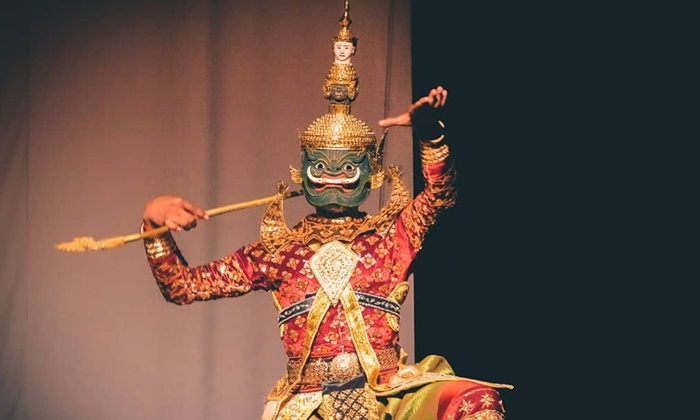
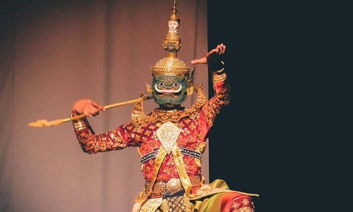

โขนไทย
พบกับ โขนไทย สุดยอดละครหน้ากากแห่งราชสำนัก
ชมความงามของการร่ายรำ อลังการของเครื่องแต่งกาย และเรื่องราวมหากาพย์รามเกียรติ์ในบรรยากาศที่หาชมได้ยาก
มาเรียนรู้วัฒนธรรมไทยแบบใกล้ชิด และถ่ายภาพเก็บเป็นความทรงจำที่ไม่เหมือนใคร
ประวัติโดยย่อของโขนไทย
โขนไทย เป็นศิลปะการละครพื้นบ้านอันทรงคุณค่าและเอกลักษณ์ของประเทศไทย มีจุดกำเนิดมาตั้งแต่สมัยอยุธยา เป็นการละเล่นเพื่อถวายพระมหากษัตริย์และเป็นส่วนหนึ่งของพิธีราชการสำคัญ
โขนผสมผสาน การแสดงท่ารำอ่อนช้อย การสวมหน้ากากสีสันสดใส และบทกลอนร่ายรำ ถ่ายทอดเรื่องราวจาก รามเกียรติ์ ซึ่งเป็นมหากาพย์โบราณของไทย
นอกจากความงดงามทางศิลปะ โขนยังสะท้อนถึง คุณธรรม ความกตัญญู และความกล้าหาญ ผ่านตัวละครอย่างพระราม หนุมาน และทศกัณฐ์
โขนจึงไม่ได้เป็นเพียงการแสดง แต่ยังเป็น มรดกทางวัฒนธรรมที่สืบทอดความงดงามและภูมิปัญญาของไทย